中川川
| 日付 | 2016年7月3日（日） |
|---|---|
| メンバー | 家族（妻、長女・5歳、長男・3歳） |
| アクセス | 車 |
暑い季節になってきたため、川遊びに行くことにする。
以前、丹沢の大杉山に登った際に中川川を眺めて
きれいな水だなと思ったため、そこに行ってみることにする。
ネットで調べてみると、いくらか遊べるポイントがありそうだ。
ぶなの湯の駐車場に車を停めさせてもらい、河原に下りる。
無人だったらどうしようかと思っていたが、到着すると
既に遊んでいる人が何人かいたため一安心。
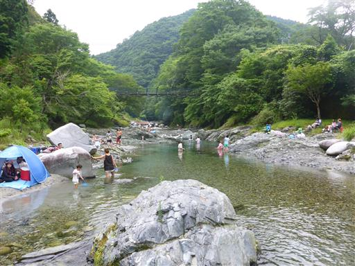
水は非常にきれいだ。
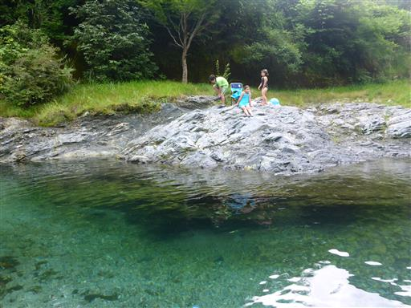
子供たちは早速、浅瀬でおたまじゃくし取りに興じている。
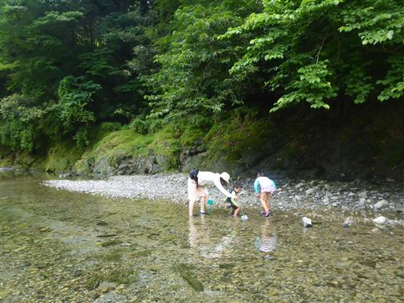
網があればいくらでも捕まえられる。
小魚もたくさん泳いでいたが、こちらは速すぎて捕まえられなかった。
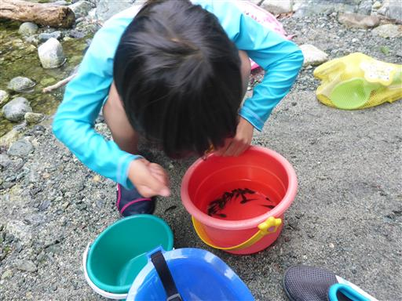
水の中を歩く。水は非常に冷たく、なかなか深い所に入る気にならない。
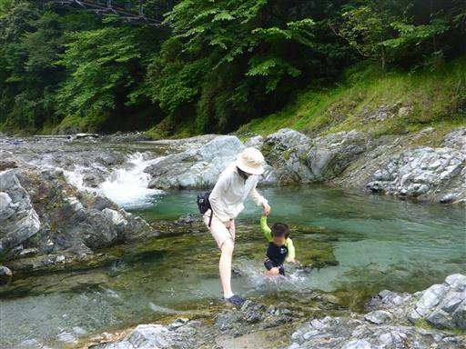
浮き輪をつけて少し深い所に行ってみる。
足が付かない場所は、子供たちは怖がっている。
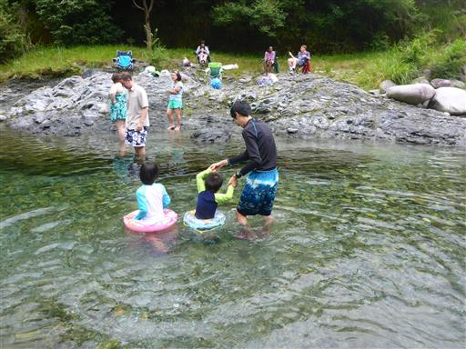
体が冷えたらテントに戻って昼食をとる。
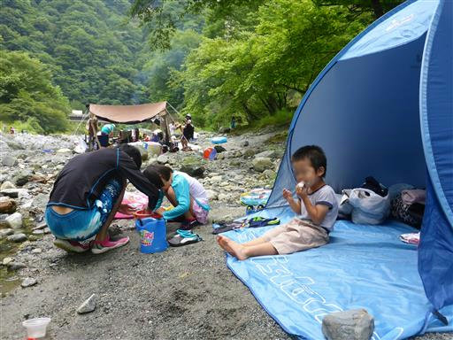
カワトンボが辺りをひらひら飛んでいる。とまる時は羽を閉じるのが特徴的だ。
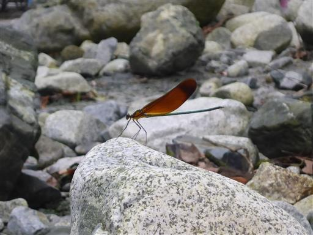
昼食後は少し上流方面へ歩いてみる。

小さな滝がいくつか見られる。流れは比較的穏やかだ。
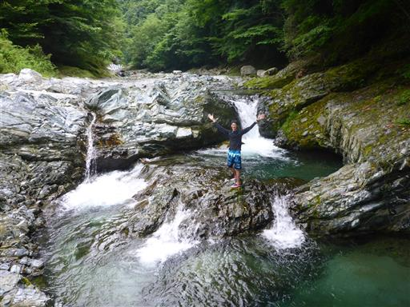
川幅が広くなっている場所は、川の中を歩いていく。
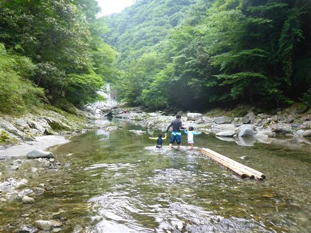
水面が静かなところは、水底までくっきりと見える。
水の色が非常にきれいだ。
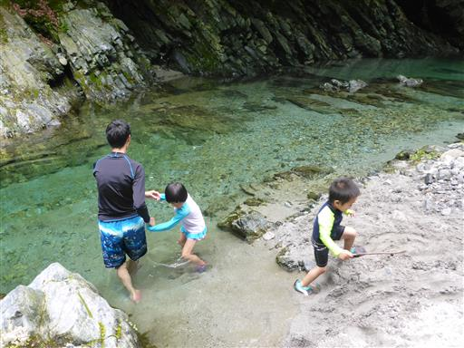
岩の上の小さな水たまりに、おたまじゃくしが大量にいる。
水かさが減ってここに取り残されてしまったのだろうか？
雨が降って水かさが増えないと、ここのおたまじゃくしは死滅してしまいそうだ。
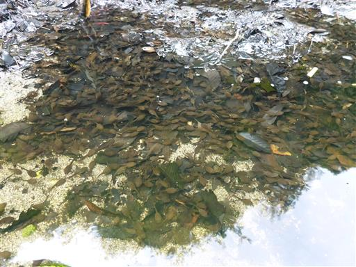
堰堤が見えたところで引き返す。帰りは川の縁の岩場を歩いてみる。
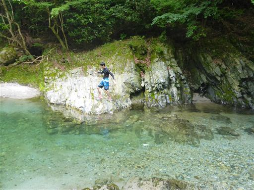
一通り遊んだらぶなの湯に行って、冷えた体を温める。
川遊びの後に温泉に入れるのは有難い。
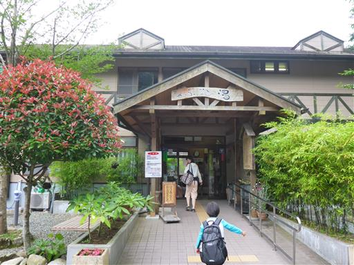
ぶなの湯の側の吊り橋に行ってみる。
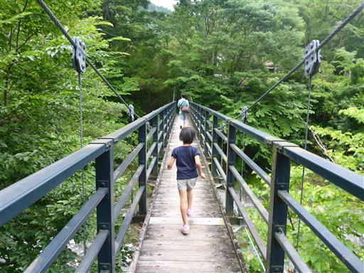
本日遊んだ川を見下ろす。
川の規模はそれほど大きくないが、水が非常にきれいで満足な川遊びができた。
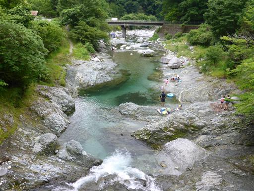